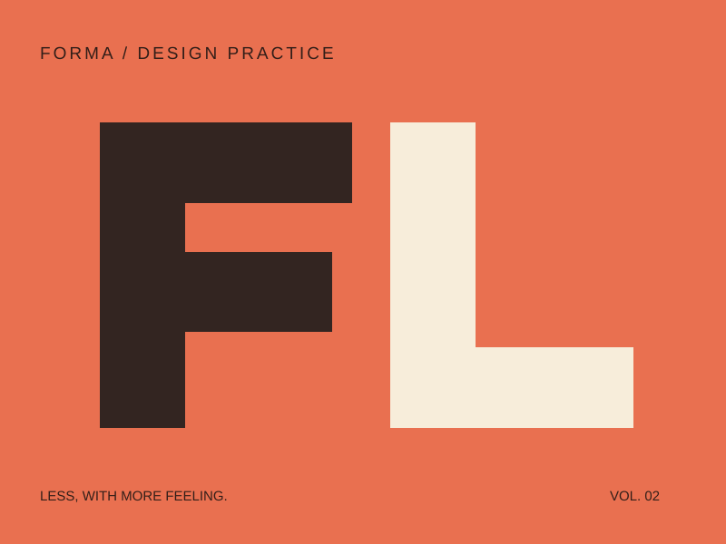
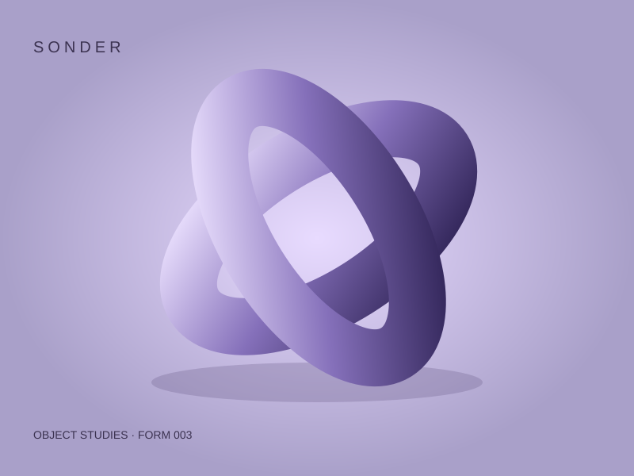

ARC LIBRARY / PRODUCT PROTOTYPEv0.1.0 · 2026.11.04
给好想法，
一个好位置。
Arc Library 是为设计师和创意团队制作的桌面素材工作台。让收藏、查找、预览和检查，在同一处自然发生。
原创 SVG 素材 · 合成文件信息 · 本地 HTML 交互 · 无后端连接



让作品带路
在集合间切换，用名称、标签或文件类型筛选。网格看作品，列表看信息。
有上下文的细节
选择素材后查看尺寸、格式、颜色与标签。空格打开大图，Esc 返回工作区。
保留有用的想法
收藏、添加标签、建立集合；更改保存在当前浏览器。复制详情有权限失败后的可用退路。
设计与验收
| 材料 | 用途 |
|---|---|
| 风格参考 HTML | 三个 Dribbble 案例、真实观察、双方向比较与授权记录 |
| 可视化 UI 规范 | 实际 token、字体、密度、组件状态和动效样例 |
| DESIGN.md · 桌面适配 | 产品目标、交互规则、精确值与实现交接 |
| 研究来源 · QA 记录 | 检查范围、原型边界与待验证内容 |
可复核的状态
这些入口仅模拟状态。SVG 是真实本地原创文件；PNG/PDF 文件名、尺寸、体积和日期为合成展示数据。原型不会扫描、导入或打开本机原生文件，不会调用系统文件权限或云端存储。